스시(寿司) 또는 초밥(醋-)은 어패류의 살이나 유부·계란·김 따위 식재료들을 초에 절인 밥 위에 올려 만든 일본 요리를 말한다. 밥이라는 기본적인 맛을 아래에 깔고, 다양한 종류와 조리법으로 조미된 생선을 맛볼 수 있어 일본인 특유의 '절제된 형식미'를 느낄 수 있는 내외국인 공인 가장 일본적인 일본요리라 할 수 있다.
한국에서 스시를 '초밥'으로 부르기 시작한 때는 1940년대인 듯하다. 본래 일본말 스시가 그대로 사용되었으나 1940년대 생선을 밥 위에 얹어서 먹는다고 하여 생선 초밥 (줄여서 초밥 또는 회초밥)이라는 말이 대체용어로 사용된 모양이다. 재미있게도 당시 김기림 시인은 '초밥'이라는 신조어가 냉소와 조롱 속에 잊혀질 것이라고 내다보았지만 결국 '초밥'은 현재까지도 생명력과 보편성을 잃지 않고 살아남았다. 도시락, 덮밥 등과 함께 성공적으로 정착한 일본어의 우리말 대체 표현 중 하나. 사실 음식의 발상지를 존중하자는 취지에서는 '스시'라고 읽음이 바람직하겠지만, 현재 한국에는 '초밥'이 워낙 보편화되어 '스시'는 외래어도 아니고 아예 외국어의 어감을 띤다. 그래서 이 문서의 표제도 초밥이다.
- 니기리즈시(握り~, 쥠초밥)
- 테마리즈시(手毬~, 구슬초밥)
- 군칸마키(軍艦~, 군함초밥)
- 노리마키즈시(海苔巻き~, 김초밥)
- 후토마키즈시(太巻き~)
- 테마키즈시(手巻き~, 손말이초밥)
- 캘리포니아 롤(California Roll)
- 이나리즈시(稲荷~, 유부초밥)
- 치라시즈시(ちらし, 흩뿌림초밥)
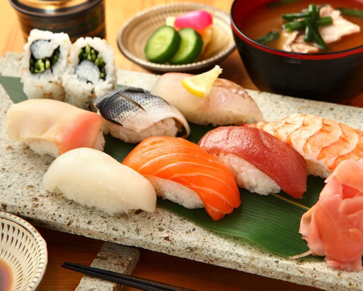
말 그대로 재료와 밥을 손으로 쥐어서 만든 초밥. 가장 대중적인 종류의 초밥이다.
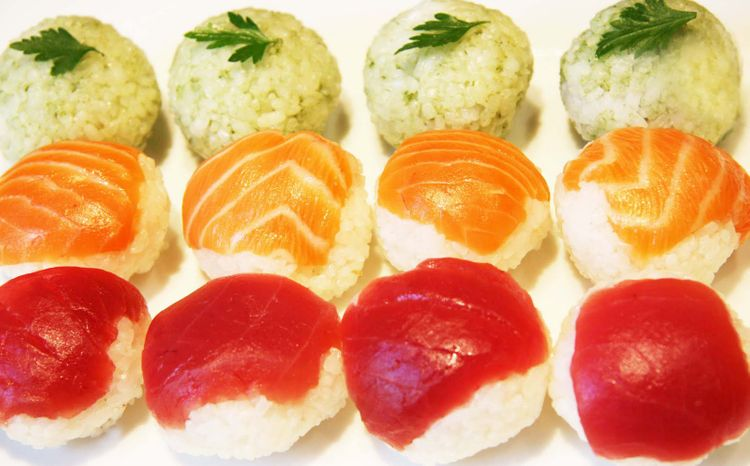
일본의 동글동글한 공인 테마리에서 이름을 딴 동글동글한 초밥. 초밥에 집중하기 힘든 선자리나 게이샤와의 유흥자리 등에서 먹기 위해 개발된 스시. 게이샤들의 입술 화장에 닿지 않게 한입에 쏙 들어가는 작은 크기와 동근 모양을 갖추게 된 것이다.
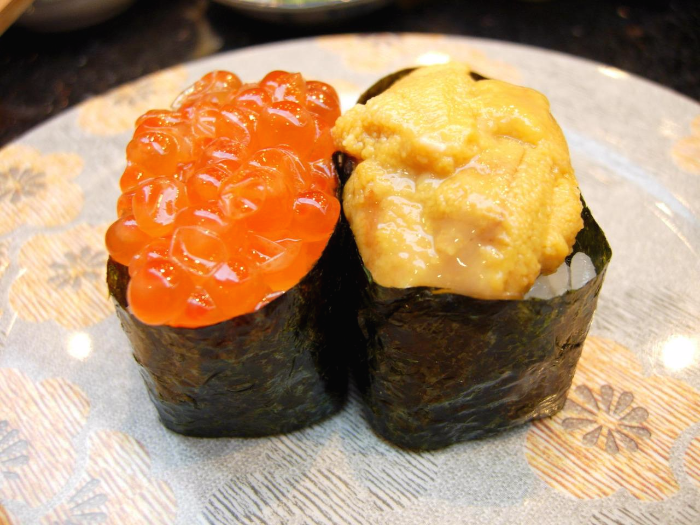
니기리즈시와 마키즈시의 융합. 모양을 잡기 힘든 재료들을 초밥으로 담아내기 위해 김을 말아 형태를 잡는다. 연어알(이쿠라), 네기도로(참치살을 다진 것), 성게알(우니), 다코와사비(낙지 다진 것) 등이 대표 재료. 군함이라는 특이한 이름은 둘러진 검은 김의 모습이 군함을 닮았다고 해서 붙었다.
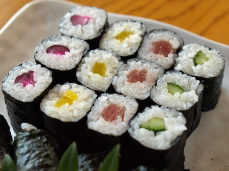
한 가지 재료만 간단히 들어간 간토식 김초밥. 약칭은 "마키". 참치 붉은살(뎃카마키), 오이(캇파마키), 박고지(칸표마키), 단무지(신코마키) 등을 일반적으로 쓴다. 좋게 말하면 마무리를 위한 가벼운 입가심이고, 그만큼 품격이 떨어지는 메뉴로 취급되기도 한다. 아래에 나오는 굵은 간사이식 후토마키와 구별하여 호소마키 라고도 부른다.
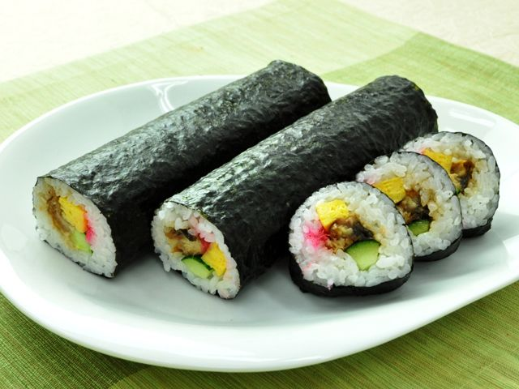
다양한 재료가 들어간 간사이식 마키즈시로, 얼핏 보면 한국의 김밥과 유사하다. 일본 명절 중에 이 후토마키를 자르지 않고 한 줄을 다 먹는 날이 있는데, 그런 날 백화점 등에서는 한줄에 10만 원이 넘는 김밥도 판다. 최고급 참치와 마츠사카규 등이 들어가면 만 엔대를 가볍게 넘는다. 1980년대까지만 해도 동대문의 진고개 식당같은 구한말 느낌이 고스란히 살아 있는 한정식 집에서는 판매했던 메뉴이다. 한국의 김밥에 비해 밥에서 식초맛이 매우 강한 편이며, 계란을 제외하고는 주된 맛이 해산물향이 강하다.
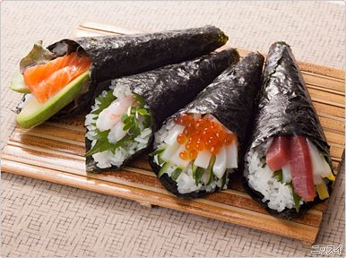
밥과 재료를 김으로 다발 모양으로 간편하게 말아낸 마키즈시. 만들기 쉬워 홈메이드 초밥의 대표이기도 하지만, 근본있는 스시야에서도 다루는 엄연한 정통 초밥이다. 국내에선 한때 우동과 함께 나오는 경우가 잦았으며, 일식을 취급하는 뷔페에서도 심심찮게 찾아볼 수 있다. 주로 중저가 일식집의 경우 사시미 코스의 마무리 초밥으로 많이 나온다. 가게에 따라 재료의 폭이 넓다. 일반 초밥 재료 외에 낫토나 게내장젓갈(카니미소) 등을 쓰기도 한다

구미권 태생 마키즈시의 총칭. 해조류를 먹지 않는 문화에서 자란 서양인들을 고려해 김을 두르되 밥이 겉에 나오게 하여 검은 부분을 숨겼고, 재료도 날생선과 알을 넘어 고기나 아보카도 등을 다양하게 쓴다. 와사비와 간장이 정석인 초밥과는 정반대로 소스도 적극적으로 사용하여, 마요네즈와 데리야끼는 물론이고 맵고 짜고 자극적인 맛을 내기도 한다. 상당히 인기 있는 메뉴지만, 절제되고 정갈한 맛을 추구하는 일본인의 취향과는 동떨어져 있어 초밥이라기에는 뭔가 다른 물건. 본토는 물론 한국에서도 롤은 스시가 아닌 다른 무언가로 보는 편이다. 대중적인 초밥집에서는 대부분 메뉴에 포함되어 있다.
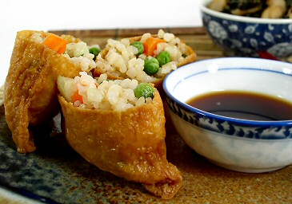
유부로 밥을 감싼 초밥. 메인 재료부터 식물성이다 보니 초밥 세계에서는 권외 취급당하는 미묘한 메뉴이다. 오이초밥과 더불어 무시당하고 있지만(...) 음식이라는 면에서의 인기는 많고 나름대로 파고들 요소가 있다. 물기를 완전히 짜내고 얹는 한국식 유부초밥과는 방향성이 다르다. 초밥집에서는 계란말이 초밥과 함께 값싼 메뉴로 많이 올라와 있다. 맛내는 법에서 관동과 관서의 차이가 크며, 심지어 유부를 자르는 법에서도 구별이 있다.
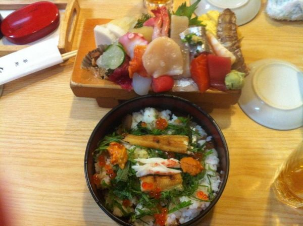
한국의 회덮밥과 비슷한 것으로, 그릇에 담긴 밥 위에 여러 종류의 회조각과 해산물들을 가득 얹어놓은 형태이다. 니기리즈시를 먹을 형편이 못되었던 사람들이 먹던 서민 음식으로, 여러 생선 조각들(아마도 니기리즈시를 만들고 남았던 찌꺼기)을 섞어서 밥 위에 얹어 먹던 게 유래라 알려져 있다. 특별한 초밥쥐기 기술을 요구하지 않으므로 집에서도 쉽게 만들어먹는 대표적인 초밥이다.
규카츠(牛カツ)는 자른 쇠고기에 빵가루로 옷을 입고 식용유에 튀긴 일본식 양식이다. 비프카쓰(ビフカツ, ビーフカツ) 또는 비프 커틀릿(ビーフカツレツ)라고도 불린다.
메이지 시대에 커틀릿이라는 튀긴 송아지 고기 또는 쇠고기를 기름을 넣은 프라이팬에 구운 서양 요리가 소개되었다. 나중에 이것이 여러 튀김 조리법으로 변화하고 현재의 모습이 되었다.
다이쇼 시대 이후 커틀릿 재료는 쇠고기에서 돼지 고기로 주로 많이 사용되었다. 이러한 이유는 양식이 대중화하는 과정에서 더 저렴하고 접근성이 쉬운 재료가 요구된 것이나, 일본인, 특히 돼지고기 문화권인 도쿄 사람의 입맛에 맞는 것이 이유로 여겨지고 있다. 그러나 고베, 오사카, 교토 등의 긴키 권에서는 현재도 쇠고기 커틀릿을 선호하는 사람들이 많아 가정이나 외식으로 일상적으로 먹을 수있다.
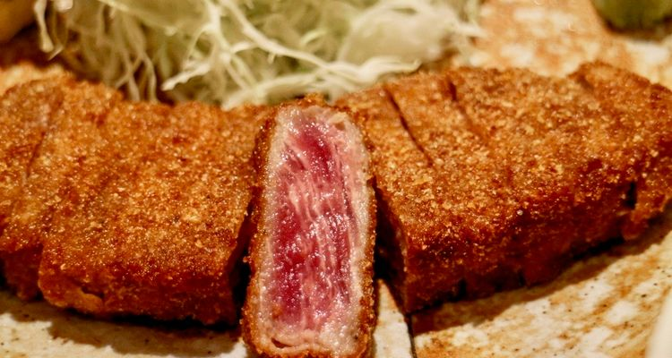
라멘(ラーメン)은 면과 국물로 이뤄진 일본의 대중 음식이다. 납면을 이용한 중국의 국수 요리인 라몐을 기원으로 한 면요리로서 면과 국물, 그 위에 돼지고기(챠슈), 파, 삶은 달걀 등의 여러 토핑을 얹는데, 지역이나 점포에 따라 다양한 종류가 있다. 일본에는 국민 음식이라 할 만큼 인기가 있으며, 일본 외에도 지명도가 높은 일식이다. 일본에서는 중국 요리로 분류하기도 한다.
재료
- 면
- 스프
- 고명
밀가루를 원재료로 하여 염수는 알칼리염 수용액을 첨가하는 것이 큰 특징이다. 따라서 같은 밀가루로 만든면에서도 한국의 국수 요리, 일본의 우동, 중국의 많은면 요리와 다른 독특한 색감과 식감을 갖는다.
이 밀가루에 물을 넣어 가늘고 얇은 면으로 만든다. 많은 경우 "제면기"로 뽑아내거나, 제면 회사가 제조하는 면을 사용하는 가게도 많지만, 1990년대 이후 소형 압연기 등이 유통되고, 라면 전문점에서 수제로 면을 뽑는 가게가 늘고있다.
또한 면의 굵기에 따라, "세면(細麺, 얇은 면)", "중세면(中細麺)", "중태면(中太麺)", "태면(太麺, 굵은 면)"등으로도 구분된다. 또한 면의 꼬불꼬불한 상황도 고려한다. 이것을 조합하여, 마니아가 라멘의 면을 평가하는데 "중세 스트레이트 면(中細ストレート麺)"이라고 칭하기도 하만, 어디까지나 감각적인 호칭이다. 하카타 라면의 얇은 면에서 우동보다 굵은 면까지 다양하다.
대체로 칼로 썰어내는 횟수(키리바반테(切刃番手)라고 부른다.)에 따라 면의 굵기가 결정되기도 하며, 18번, 20번, 22번, 24번 면이 주로 사용된다. 또한, 삿포로 라멘은 태면 22번이 주로 사용된다.
보통 물은 끓는 물에 삶아준다.
일본에서 라멘 국물은 "수프(スープ)"라고 부른다. 그릇에 넣은 소스와 육수(다시)를 조합하여 수프를 만든다.(국물,육수를 "수프"라고 부르기도 하지만, 여기에서는 혼동을 피하기 위해 구분하여 작성).
수프는 라멘의 맛을 결정하는 매우 중요한 요소이며, 수고를 들여 연구한 수프를 사용하는 가게가 대부분이다. 따라서 육수와 소스는 따로 조리한다.
소유라멘은 차슈(구운 돼지고기)와 멘마(죽순절임)와 파가 주로 사용되고, 돈코츠라멘은 구운 파와 부추, 목이버섯이 주로 사용된다. 고명은 기본으로 제공되거나 혹은 추가되는 재료에 따라 "야사이라멘(野菜ラーメン→채소 라멘)", "네기라멘(ネギラーメン→파 라멘)" 등의 별도의 메뉴가 있다. 고명을 넣지 않는 라멘도 있다.
소스의 종류에 따른 분류
- 쇼유라멘(醤油ラーメン)
- 시오라멘(塩ラーメン)
- 미소라멘(味噌ラーメン)
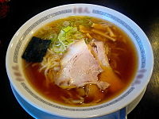
간장(醤油)으로 간을 낸 국물의 라멘. 가장 대중적인 라멘 소스. 국물에 따라 맑은 색상과 깔끔한 맛의 수프에서 탁하고 진한 맛까지 다양한 종류로 나뉜다. 생선계의 육수와 간장을 미림 등과 함께 익히는 것도 있고, 지역성을 반영하고 있는 라멘이 많이있다.
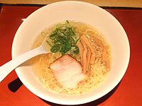
소금으로 간을 낸 국물의 라멘. 쇼유보다 더 국물의 특징이 나타나지만, 소스 자체의 맛이 다른 것보다 깔끔하기 때문에, 전체적으로 담백한 맛이 많다.
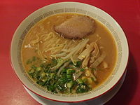
일본식 된장인 미소(味噌)로 간을 낸 국물의 라멘. 미소의 향기와 깊은 맛이 특징. 미소의 종류에 따라 다르지만, 진한 맛으로 된 것이 많다.